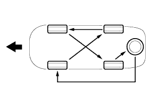
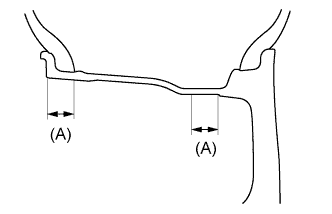

TIRE AND WHEEL SYSTEM > INSPECTION |
| 1. INSPECT TIRES |
Check the tires for wear and proper inflation pressure.
| Vehicle Model | Tire Size | Front kPa (kgf/cm2, psi) | Rear kPa (kgf/cm2, psi) |
| URJ150L-GKTZKC | 265/60R18 110H | 220 (2.2, 32) | 220 (2.2, 32) |
| URJ150L-GKTZKV | 265/60R18 110H | 200 (2.0, 29) | 200 (2.0, 29) |
| URJ150L-GKTZKW | 265/60R18 110H | 200 (2.0, 29) | 200 (2.0, 29) |
 |
Using a dial indicator, check the tire runout.
| 2. ROTATE TIRES |
|  |
 | Front |
| 3. INSPECT WHEEL BALANCE |
|  |
Check and adjust the off-the-car balance.
If necessary, check and adjust the on-the-car balance.
| 4. INSPECT FRONT AXLE HUB |
Inspect the front axle hub (Click here).
| 5. INSPECT REAR AXLE SHAFT |
Inspect the rear axle shaft (Click here).